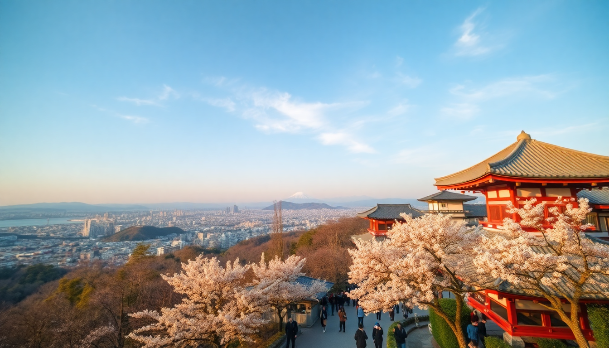

Best Time to Visit Japan’s Cherry Blossom Season 2025

I’ve chased cherry blossoms across Japan three times now, and I’ll be honest: the first year I showed up a week late and caught nothing but green leaves. The second year I nailed it, but spent half my time fighting through selfie-stick crowds in Ueno Park. By the third trip, I had a system. This guide is that system — a no-fluff breakdown of when to go in 2025, where to plant your picnic blanket, and how to dodge the worst of the tourist crush in Tokyo, Kyoto, and Osaka.
When does cherry blossom season actually start in 2025?
The official forecast from the Japan Meteorological Corporation usually drops in January, but based on historical patterns and current climate trends, here’s the realistic window for 2025. In Tokyo, expect the first blooms around March 22–25, with full bloom (that’s the peak “fluffy pink clouds” look) hitting March 29–April 2. Kyoto runs about three days later — full bloom around April 1–5. Osaka sits in between: full bloom roughly March 30–April 3.
- Tokyo: First bloom March 22–25, full bloom March 29–April 2
- Kyoto: First bloom March 25–28, full bloom April 1–5
- Osaka: First bloom March 24–27, full bloom March 30–April 3
These dates shift a bit each year. In 2024, everything came a week early due to a warm winter. I always book refundable hotels for a five-day window around the predicted full bloom, then watch the JMC updates like a hawk.
What’s the best week to book for Tokyo?
If you only have one shot, target March 28 to April 3. That puts you right in Tokyo’s full-bloom sweet spot. I’ve done both the early-bird and late-comer routes, and this window gives you the best balance of peak color and manageable crowds.
For a picnic spot that’s actually enjoyable, skip Ueno Park (it’s a zoo, literally and figuratively). Instead, head to Shinjuku Gyoen National Garden. It’s a 15-minute walk from Shinjuku Station, costs ¥500 entry, and the crowd thins out because of the fee. I sat under a weeping cherry near the French garden last year and had a solid hour of quiet before the lunch rush.
- Shinjuku Gyoen — ¥500 entry, opens 9am, arrive by 8:45 to beat the line
- Meguro River — stunning night illuminations, but shoulder-to-shoulder on weekends
- Chidorigafuchi — rent a rowboat for ¥800 and paddle under the blossoms near the Imperial Palace
For accommodation, I stayed at Hotel Gracery Shinjuku (the “Godzilla Hotel”) last trip. It’s basic but clean, and the location near Kabukicho puts you a short walk from Shinjuku Gyoen. Book by November for spring — prices double by February.
Where in Kyoto should I go to avoid the worst crowds?
Kyoto during cherry blossom season is a special kind of beautiful and a special kind of crowded. Maruyama Park near Yasaka Shrine is the famous spot, and it’s packed from dawn until the last night illumination. I went once and spent more time dodging tripods than looking at trees.
My go-to alternative: Philosopher’s Path (Tetsugaku-no-Michi), but go at 6:30am. Seriously. The path runs about two kilometers along a canal lined with cherry trees, and by 7am it’s already getting busy. At 6:30am, you’ll share it with a few joggers and a stray cat or two. I walked the full stretch in 45 minutes, stopped at a vending machine for hot coffee, and had the whole thing to myself for another 20 minutes.
- Philosopher’s Path — free, best before 7am, starts near Ginkaku-ji
- Heian Shrine — the weeping cherry in the back garden is worth the ¥600 entry
- Ninnaji Temple — late-blooming varieties, good if you miss the main window
For food, Omen Kodai-ji serves excellent udon in a quiet alley near the path. It’s not cheap (around ¥1,500 for a bowl), but it’s a calm refuge from the chaos. I also grabbed onigiri from 7-Eleven near Higashiyama Station and ate it on a bench along the canal — best ¥150 meal of the trip.
Is Osaka worth visiting during cherry blossom season?
Yes, but for different reasons. Osaka’s cherry blossom spots are less famous than Kyoto’s, which means fewer tourists. Osaka Castle Park is the main draw — the castle framed by pink blossoms is a postcard shot, and the park itself is huge, so you can find a quiet patch even during peak week.
I spent an afternoon at Kema Sakuranomiya Park, which runs along the Okawa River for about 4 kilometers. It’s free, locals dominate the crowd, and you can rent a bike from Ekirin Cycle near Temmabashi Station for ¥1,000 a day. I cycled the riverbank, stopped at a food stall for takoyaki (¥500), and watched families picnic under the trees. No ticket, no line, just cherry blossoms and Osaka energy.
- Osaka Castle Park — free entry to the park, ¥600 for the castle keep
- Kema Sakuranomiya Park — best for cycling, 4km of continuous trees
- Minoh Park — 30 minutes north by train, waterfall + blossoms combo
For hotels, I booked Hotel Keihan Tenmabashi last year. It’s right on the river, a two-minute walk from the park, and rooms run about ¥12,000 a night in early April. The breakfast buffet includes okonomiyaki — not great okonomiyaki, but it’s included.
How do I handle transportation between cities?
The Shinkansen (bullet train) is your only real option. From Tokyo to Kyoto takes about 2 hours 15 minutes on the Nozomi train (¥13,320 one way). Kyoto to Osaka is just 15 minutes on the JR Special Rapid Service (¥580). I bought a 7-day Japan Rail Pass for ¥50,000 in 2023, but the price jumped in October 2023 to ¥70,000 — now it only makes sense if you’re also doing a side trip to Hiroshima or Hakone.
- Tokyo to Kyoto: Nozomi Shinkansen, 2h15m, ¥13,320
- Kyoto to Osaka: JR Special Rapid, 15m, ¥580
- Osaka to Tokyo: Nozomi Shinkansen, 2h30m, ¥13,620
Book Shinkansen tickets via SmartEX app in advance — you can reserve specific seats and avoid the counter lines at Tokyo Station. I learned that lesson the hard way, standing for 45 minutes while my train left.
What should I pack for cherry blossom season?
Spring in Japan is unpredictable. I’ve had sunny 20°C days followed by 8°C drizzle the next morning. Layers are the answer. I wore a light merino sweater under a packable windbreaker every day, and swapped to a t-shirt when the sun came out.
- Lightweight down jacket — Uniqlo’s packable one is perfect, ¥5,000
- Comfortable walking shoes — I used Onitsuka Tiger Mexico 66, zero blisters
- Foldable picnic blanket — ¥500 at Don Quijote, saves you from wet grass
- Hand sanitizer — public restrooms often lack soap
- Portable battery — you’ll be on your phone for maps and photos all day
Don’t bother with an umbrella unless you check the forecast and see rain. Convenience stores sell cheap clear ones (¥300) if you get caught out.
FAQ
Is it worth visiting Japan for cherry blossoms if I can only go in late April? It depends on where you go. The main bloom in Tokyo and Kyoto is over by April 10, but you can catch late-blooming varieties in northern Japan. Head to Hirosaki Castle in Aomori (early to mid-May) or Matsumae Park in Hokkaido (late April to early May). For Kyoto specifically, Ninnaji Temple has late-blooming yaezakura that can last into mid-April. Just don’t expect the classic pink canopy in the main cities.
How crowded is it really? Worse than you think. I’ve been to Shibuya Crossing at rush hour, and Ueno Park during peak bloom made that look empty. The key is timing: weekdays are half as crowded as weekends, and early mornings (before 8am) are a fraction of afternoon crowds. If you can only go on a weekend, pick a paid spot like Shinjuku Gyoen or a less famous park like Sumida Park in Tokyo.
Can I see cherry blossoms for free? Absolutely. Most of the best spots are free. Philosopher’s Path in Kyoto, Meguro River in Tokyo, and Kema Sakuranomiya Park in Osaka all cost ¥0. You’ll pay for food and drinks, but the trees themselves are public property. The only places that charge are gardens like Shinjuku Gyoen or temple grounds like Heian Shrine.
Conclusion
- Book your trip for March 28–April 3 in Tokyo, April 1–5 in Kyoto, and March 30–April 3 in Osaka for peak bloom in 2025
- Skip Ueno Park and Maruyama Park — go to Shinjuku Gyoen and Philosopher’s Path at dawn instead
- Use the Shinkansen between cities, but only buy a Japan Rail Pass if you’re adding a long-distance side trip
- Pack layers, a picnic blanket, and comfortable shoes — and buy a clear umbrella from a convenience store if it rains
- Check the Japan Meteorological Corporation forecast in January 2025, and book refundable hotels by November 2024